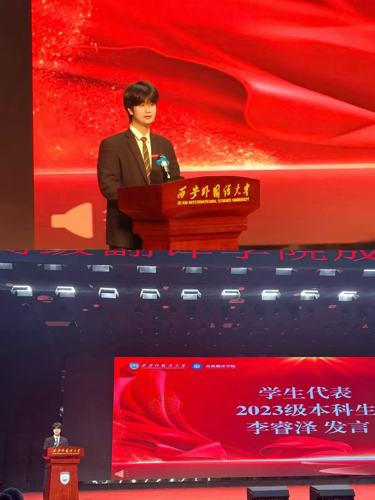
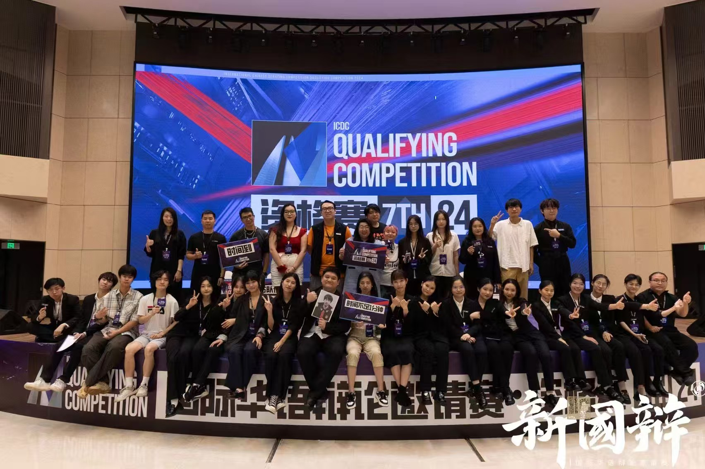
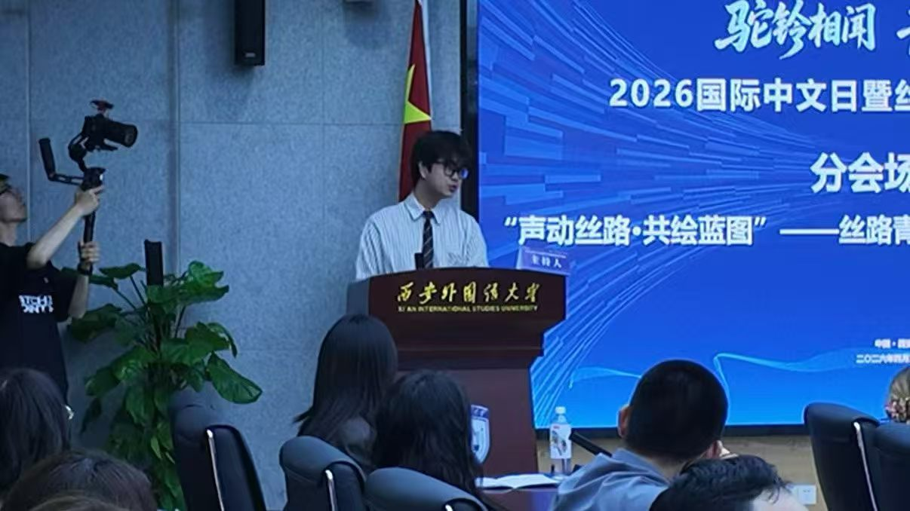

PHASE 01
从表达出发
辩论、主持、播音。第一次意识到“说得准”和“说得多”是两件事。
李睿泽
点击字母，查看我的底色
认识一个人，总要多翻几页。
我有个习惯——拿到一件事，第一反应不是"怎么做"，而是"它现在乱在哪里"，该怎么梳理。
不知道从什么时候开始，我发现自己对"把散的东西聚拢"这件事有种持续的兴趣。辩论里要把论点收拢，项目里要把节点对齐，实习里要把流程跑顺——场景换来换去，但我在做的事情好像一直是同一件：让原本模糊的东西，变得清楚一点、能动起来。
所以我的经历看起来挺杂，但我不觉得它们彼此无关。它们更像是同一件工具在不同材料上留下的切面。
这几年里还有件事我想了很久很久，也做了很久很久——遇到机会就尽力去争。不管是竞选、比赛、口译、还是我感兴趣的实习，哪怕时间排得很满，我也会先抢下来。因为我知道：要么我得到，要么我学到，不会吃亏。
我希望别人认识我，不只是"知道我做过什么"，更是"知道我是怎么做事的"。
让复杂的内容被讲清楚。
让事情被稳稳做成。
让语言、人与事之间的距离更近。
表达 · 结构 · 连接 — 向下滚动，逐屏展开
表达不是一种天赋，
是一种被每次开口打磨出来的东西。
从第一次站上辩论席，我就发现——输掉一场比赛，不是因为没有观点，而是因为没把它说清楚。这个发现让我开始认真对待"表达"这件事。
不只是辩论。主持赛事要掌控节奏和气场；站上讲台教雅思，要把语法逻辑变成学生听得懂的语言；口译席上，每一句话都没有第二次机会。
这些年我没有停止开口。每次开口，都是把上一次没说好的，往前推一点。
我接到一件事的第一反应，
不是"怎么做"，是"它乱在哪里"。
在字节，没人告诉我怎么把转化率提上去。我先用 SQL 跑出漏斗各节点的流失数据，找到真正的卡口，再动策略。结果是，转化效率提升了 60%。
在外文局，拿到项目我没有直接开始翻译——而是先建立术语库，把 500+ 个核心词汇的用法统一掌握，再开始编译。通过率 98%+。
结构不是因为谨慎，是因为我知道：想得越清楚，做起来越快，返工越少。
不是热闹，不是存在感，
是让两端真正接上。
大型国际峰会的口译席上，伊朗农业部副部长和我中间隔着一种语言。我的工作是让这道间隔消失——不是翻译词语，是传递意思。
从学校融媒体中心到丝绸之路博览会，从世界泳联世界杯到 MODEL APEC，我一直在做同一件事：把不同角色、不同信息、不同目标接起来，让事情能动起来。
连接不需要站在中央，只需要让两端都感觉到对方。
五个问题，五段经历——关于我怎么推进一件事。
六个场景，六种做事的侧面——拖动旋转，点击切换。

辩论、主持、播音。第一次意识到“说得准”和“说得多”是两件事。

赛事、融媒体、口译与社团。开始把不同角色、信息和目标接起来。

AI 产品、漏斗分析、术语库与用户测试。结构开始成为稳定的方法。
Medeo 产品增长、教学标准化，以及现在的网易云音乐笔记内容运营。
选择一种能力，让它在流动中显形。
翻译 · 口译 · 教学 · 主持
这些能力，曾经被这样看见——
靠近会散开，点击整沓展开；每一张经历卡都可以翻转，点击查看背面的具体信息。
这不只是我网站的标题，也是我练习的人生方法。
表达、结构、连接——这三件事还在进行中，我也还在生长。
如果你看到这里，大概对我已经有了一个大概的判断。
欢迎来交换看法，或者我们可以一起做点有意思的事。